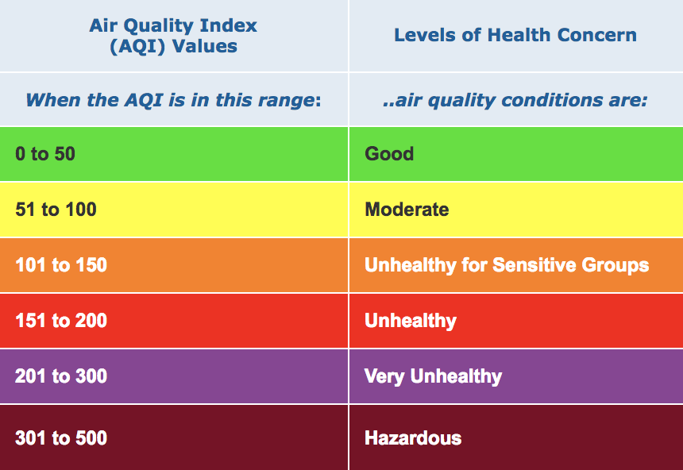

Do you know what you're breathing in?
The air you breathe is measured
Air quality is measured using the Air Quality Index (AQI).
What is an index? There are different ways that the air you breathe can be harmful. An index looks at all the different ways (toxins) and rates how harmful the air is overall.
Each category corresponds to a different level of health concern.